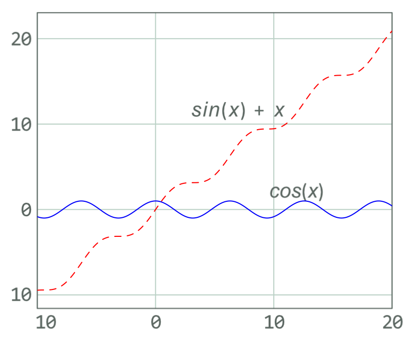

Extending LaTeX
Lua Code through LuaLaTeX
Note
I recommend not using the luacode package. Use the directlua command instead as shown below.
LuaLaTeX is a LaTeX engine that allows you to run Lua code in your LaTeX document. Lua is a powerful scripting language that is easy to learn and use (somewhat similar to python). LuaLaTeX is included in most LaTeX distributions and does not require any additional installation.
To use LuaLaTeX, you need use LuaLaTeX instead of pdfLaTeX, enable it though a magic comment. For example:
Then you can use Lua code in your LaTeX document. For example:
\documentclass{article}
\begin{document}
\directlua{
local x = 5
local y = 10
tex.print(x + y)
}
\end{document}
This would print \(15\) in the LaTeX document as if it were written in LaTeX.
LuaLaTeX can be used for a variety of tasks such as generating tables, plots, and other LaTeX code. As LuaLaTeX is moving to be the standard LaTeX engine certain packages may require LuaLaTeX to work properly.
And example of using LuaLaTeX to generate a table is shown below:
\documentclass{article}
\begin{document}
\directlua{
tex.print("\\begin{tabular}{|c|c|c|}")
tex.print("\\hline")
tex.print("1 & 2 & 3 \\\\")
tex.print("\\hline")
tex.print("4 & 5 & 6 \\\\")
tex.print("\\hline")
tex.print("7 & 8 & 9 \\\\")
tex.print("\\hline")
tex.print("\\end{tabular}")
}
\end{document}
This would print the following table in the LaTeX document as if it were written in LaTeX.
LuaLaTeX can additionally be used for plotting through the luaplot package or using it to pass variables back. It uses
metapost to generate the plots.
See an example of using luaplot below:
\documentclass{article}
\usepackage{luaplot}
\begin{document}
\luaplot[
xmin=-10,
xmax=20,
plotpts=300,
hor='6cm',
ver='5cm',
clr={'red; blue'},
plotsty={'dashed evenly'},
plotoptions={
[[
autogrid(grid.bot,grid.lft) withcolor .85white;
glabel(btex ${sin(x)+x}$ etex,(7,11.5)) withcolor (0,1,0);
glabel(btex ${cos(x)}$ etex,(12,2)) withcolor (0,1,0);
]]
}
]
{sin(x)+x,cos(x)}
\end{document}
Which produces the following plot:

Basic Lua Stats
LuaLaTeX can be used to generate basic statistics. For example, the following code will generate the mean, median, mode, and standard deviation of a list of numbers.
\documentclass{article}
\begin{document}
\directlua{
function mean(t)
local sum = 0
for i = 1, #t do
sum = sum + t[i]
end
return sum / #t
end
function median(t)
table.sort(t)
if #t % 2 == 0 then
return (t[#t / 2] + t[#t / 2 + 1]) / 2
else
return t[math.ceil(#t / 2)]
end
end
function mode(t)
local counts = {}
for i = 1, #t do
if counts[t[i]] == nil then
counts[t[i]] = 1
else
counts[t[i]] = counts[t[i]] + 1
end
end
local max = 0
local mode = nil
for k, v in pairs(counts) do
if v > max then
max = v
mode = k
end
end
return mode
end
function std(t)
local m = mean(t)
local sum = 0
for i = 1, #t do
sum = sum + (t[i] - m)^2
end
return math.sqrt(sum / #t)
end
local t = {1, 2, 3, 4, 5, 6, 7, 8, 9, 10}
tex.print("Mean: " .. mean(t) .. "\string\\par")
tex.print("Median: " .. median(t) .. "\string\\par")
tex.print("Mode: " .. mode(t) .. "\string\\par")
tex.print("Standard Deviation: " .. std(t) .. "\string\\par")
}
\end{document}
Occasionally you may run in to issues with closing } in the lua code. Here it can be better to save the code as a
*.lua file and input it into the document. Or use the luacode package.
Lua Math Calculations
As already shown in the basic stats example, Lua can be used to perform math calculations. However, it can be a bit of
a hassle to code each function you may ever want to use in Lua. Instead, you can use the luacas package to make
math calculations easier. It comes with a variety of functions that can be used to perform math calculations.
For example, the following code will perform evaluation on an expression of an equation using the luacas package.
\documentclass{article}
\usepackage{luacas}
\begin{document}
\begin{CAS}
vars('x')
y = diff(x^2+x,x)+diff(2*x,x)
y = y:evaluate()
y = y:autosimplify()
\end{CAS}
\[ y = \print{y} \]
\begin{CAS}
vars('x', 'y')
z = diff(x^2+x*2*y^2,x)
z = z:evaluate()
z = z:autosimplify()
\end{CAS}
\[ z = \print{z} \]
\end{document}
This would print the following in the LaTeX document as if it were written in LaTeX.
You may still need to make your own functions for more complex calculations, that the luacas package does not cover.
Python Code through PythonTeX
Note
PythonTeX does not require you to use -shell-escape.
PythonTeX requires a Python installation and the pythontex package. The package can be installed through the
package manager of your LaTeX distribution or manually from CTAN.
Once the package is installed you need to add the following to your build instructions for your document:
So your build instructions might look like this:
or in TeXstudio would put the following in the user command:
name: pythontex:pythontex
command:
then you can run your build command as:
Now you can use Python code in your LaTeX document. For example:
\documentclass{article}
\usepackage[gobble=auto]{pythontex}
\begin{document}
\begin{pycode}
import numpy as np
x = np.linspace(0, 2*np.pi, 100)
y = np.sin(x)
print(f'y={y[1]} and x={x[43]}')
\end{pycode}
\end{document}
Note
I recommend using the gobble=auto option in the pythontex package. This will handle your indentation for you.
This would print the value of y at index 1 and x at index 43.
in the LaTeX document as if it were written in LaTeX.
It would look like this in the output:
There is generally no limit to the Python code you can run in your LaTeX document. You can even use PythonTeX to generate tables, plots, and other LaTeX code. However, be aware that PythonTeX has not been updated in a while and may have some stability issues.
PythonTeX can additionally be use for plotting like shown in PGF Graphics in Python. However, you
still need to input the pgf file after the PythonTeX code.
For example:
\documentclass{article}
\usepackage[gobble=auto]{pythontex}
\begin{document}
\begin{pycode}
import matplotlib.pyplot as plt
import numpy as np
x = np.linspace(0, 2*np.pi, 100)
y = np.sin(x)
plt.plot(x, y)
plt.savefig('plot.pgf')
\end{pycode}
\begin{figure}
\centering
\input{plot.pgf}
\end{figure}
\end{document}
Using Numerica for Math Calculations
Numerica is a package that allows you to perform math calculations in LaTeX. It offer a non LuaTeX alternative to performing math calculations in LaTeX. It is not as powerful as PythonTeX but it is a good alternative.
Numerica is included in most LaTeX distributions and does not require any additional installation. To use Numerica, you need to include the package in your LaTeX document. For example:
Then you can use Numerica code in your LaTeX document. For example:
\documentclass{article}
\usepackage{amssymb}
\begin{document}
\begin{align}
x &= 5 \\
y &= 10 \\
z &= x^2 \times 4y \\
\therefore z &= \eval*{x^2 * 4y}[x=5,y=10]
\end{align}
\end{document}
This would print the value of \(z\) in the LaTeX document as if it were written in LaTeX.
It would look like this in the output:
Numerica will also work inline, for example:
Displaying the following: \(x^2 \times 4y = 1000\) \((x=5,y=10)\).
Note
You can use the env=$ option instead to make the output inline. But can confuse your editor's syntax highlighting
until you start a new line. However, it should not cause any other issues.
For more information on Numerica and its full capabilities see the documentation.